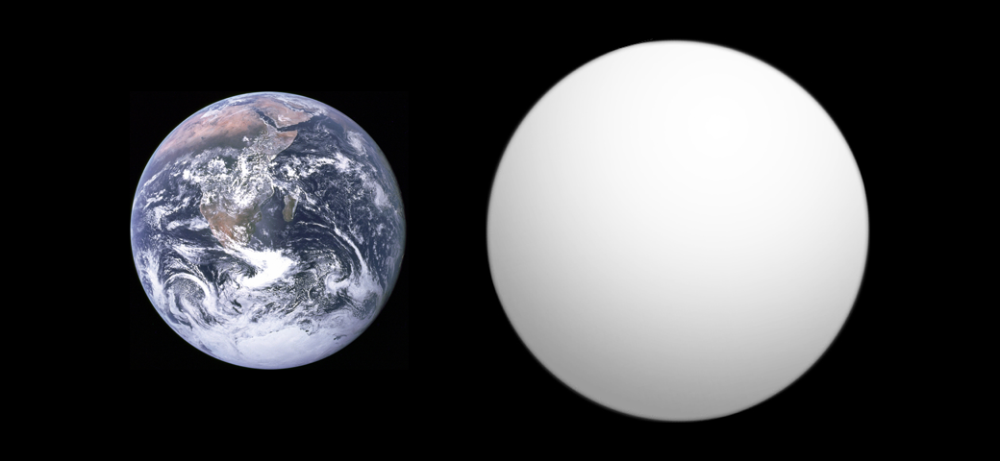

super-Earth Kepler-10 b (right) in
comparison with Earth
Overview
Super-Earths are exoplanets heavier than Earth but much lighter than ice giants like Uranus and Neptune, roughly 1 to 10 times Earth's mass. The name only describes size and mass, not whether a planet is a good place to live. A super-Earth might not even be rocky, since the group overlaps with smaller, gas-rich mini-Neptunes at the upper end.
Formation
Super-Earths are thought to form the same way Earth did, by slowly building up from smaller chunks of rock in a protoplanetary disk. They either start out with more material to work with, or they avoid growing big enough to grab a thick layer of gas before their disk runs out of it. Many orbit much closer to their star than Earth does to the Sun, likely because they drifted inward at some point during or after they formed.
Physical characteristics
A rocky super-Earth likely has stronger gravity at its surface than Earth does. That's because gravity grows faster with mass than it does with size, for planets made of similar rocky material. Even a flatter surface could feel much heavier to stand on. Some super-Earths might also hold onto enough internal heat and gravity to keep plate tectonics running for far longer than Earth is expected to.
Composition
Not every super-Earth is rocky. Some appear to be made mostly of water or other icy material, sometimes called ocean planets. Others might be the leftover cores of former mini-Neptunes that lost their gas layer to strong radiation from orbiting close to their star. This mix makes it hard to work out what a super-Earth is actually made of just from its mass and size.
Notable examples
LHS 1140 b is a well-studied rocky super-Earth that sits in its star's habitable zone, making it one of the more promising nearby planets for studying its atmosphere. Kepler-452 b, sometimes called one of Earth's closest known cousins in size, orbits a Sun-like star at roughly the same distance Earth orbits the Sun, though what it's made of is still unclear.
Detection
Super-Earths are found the same main ways as other exoplanets, through transits and radial velocity, but their smaller size compared to gas giants makes them harder to spot, needing more sensitive instruments. Missions like Kepler and TESS, along with ground-based surveys, have found that super-Earths are one of the most common types of planets in the galaxy, far more common than Jupiter-sized worlds.